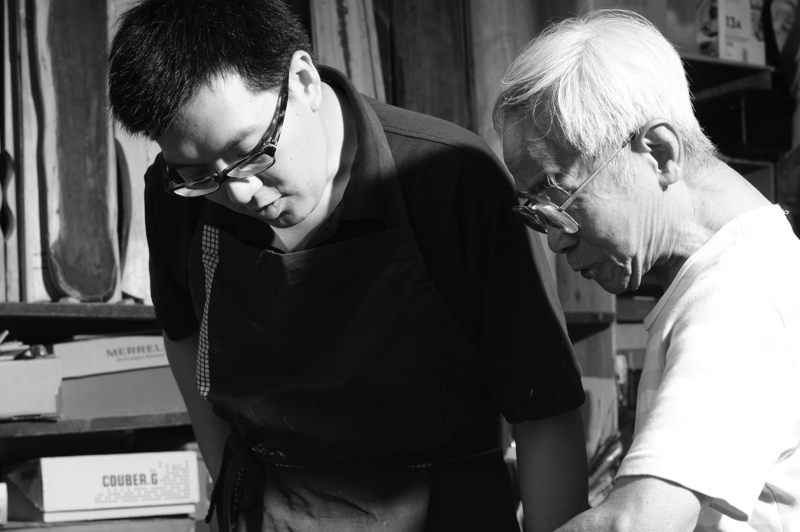
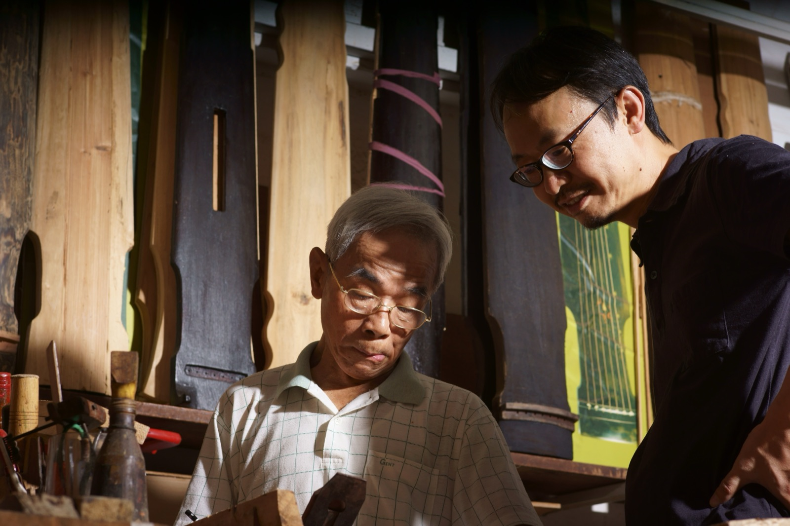
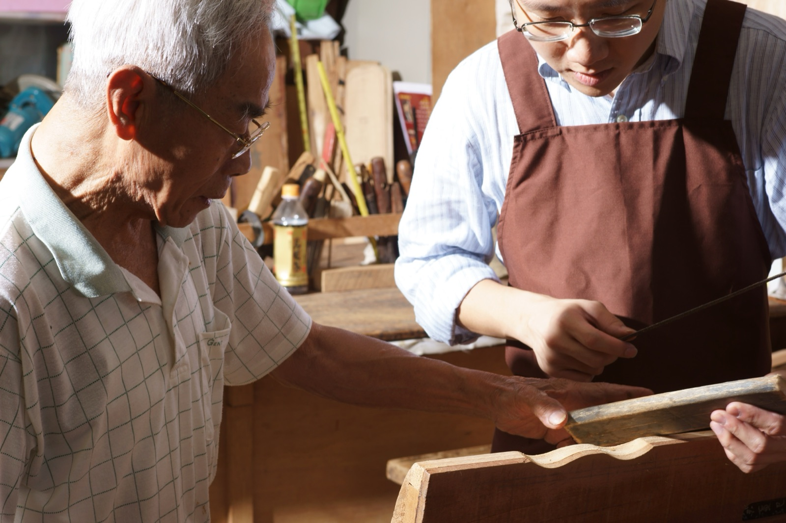

Master Choi with apprentice R. Yuen
Master Choi with apprentice R. Chung
Master Choi with apprentice H. Yuen
Master Choi with apprentice R. Yuen
Choi Chang Sau • Choi Chang Sau Qin Making Society
Choi Chang Sau (1933 - 2025) inherited the art of Zhuóqín from Master Xu Wenjing of the the Zhe School during the 1950s, and became the successor of the Zhe School's Zhuóqín art.
Choi Chang Sau was born into a family of musical instrument artisans. His grandfather, Choi Chun Fook, founded the musical instrument shop of Choi Fook Kee in Shantou over a century ago, and the family business moved to Hong Kong in 1935. Over the course of 60 years, Choi Chang Sau has handcrafted over 250 unique masterpieces of qins and has repaired and revitalized over a hundred antique qins dating as far back as the Tang Dynasty.
Since 1993, Choi Chang Sau began accepting apprentices among qin musicians to transmit the Zhuóqín art. And in 2011, he led his apprentices to found the Choi Chang Sau Qin Making Society, dedicated to the safeguarding and transmitting of his zhuóqín art to the future generations.